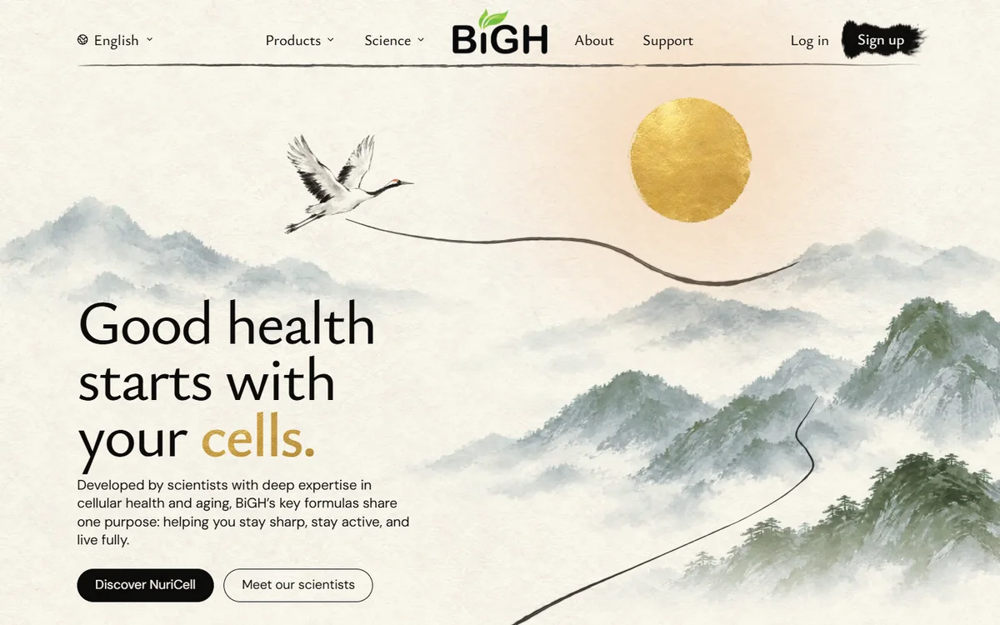
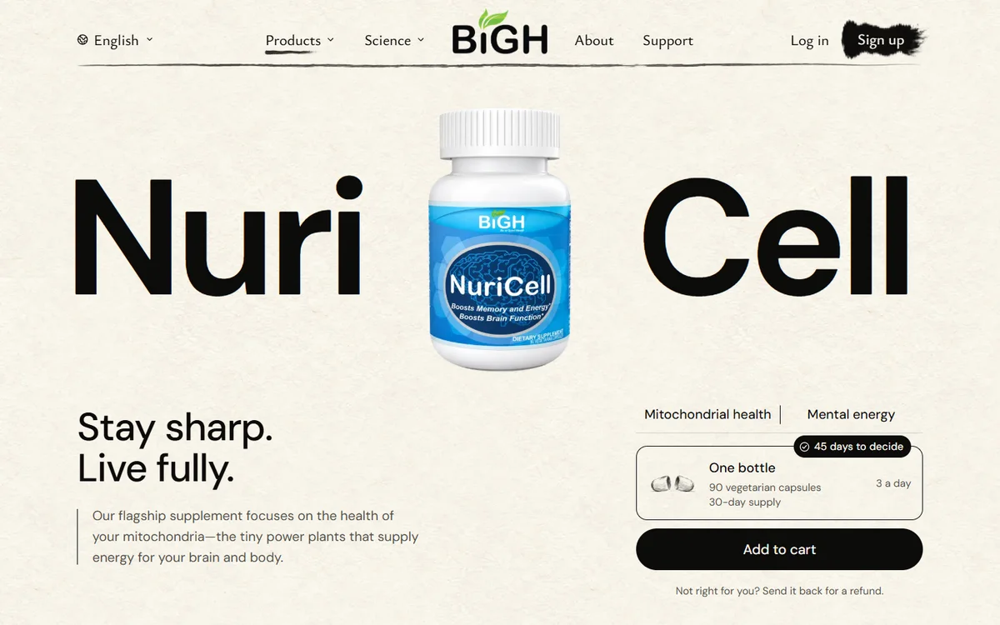
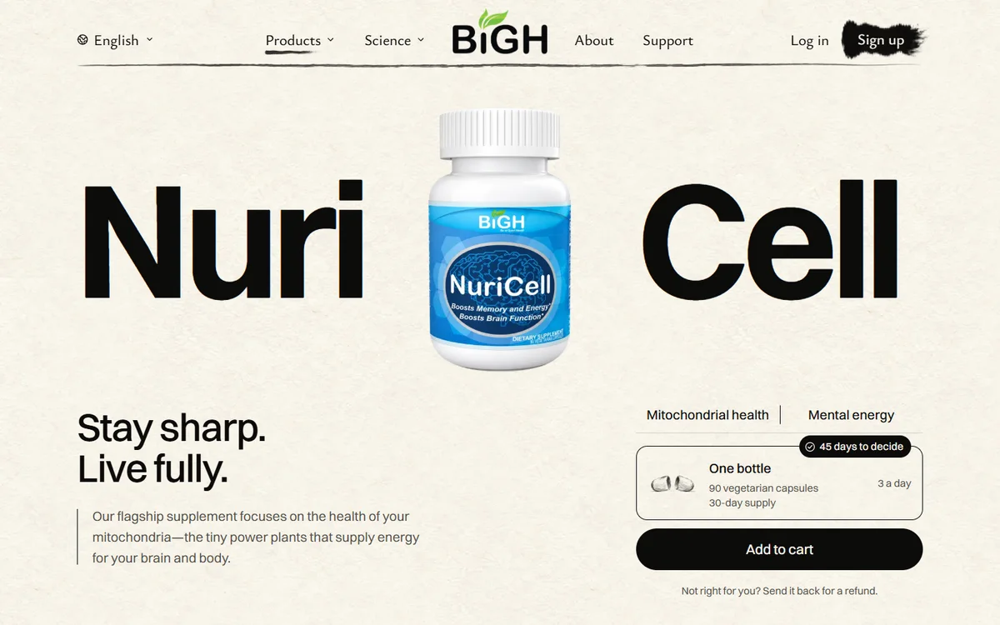

Real screenshots of the built site on this computer. Left: what a visitor got whenever the outside font service dropped the connection (a backup font). Right: Switzer, now served from our own site.
Homepage

Before, when the font service failed: the paragraph runs wider and takes four lines.After: Switzer, as designed.
NuriCell page

Before: the big name and every line of text in the backup font.

After: Switzer, as designed.
What changed
The site no longer asks the outside font service for anything while people browse.
Each time the site is built, it downloads the official font file once and serves its own copy.
The font license allows this. It does not allow putting the font files in our public code, so they are never saved there.
If the download ever fails, the build stops and the live site stays as it was.
The look is the same as the approved design. Only the source of the font changed.